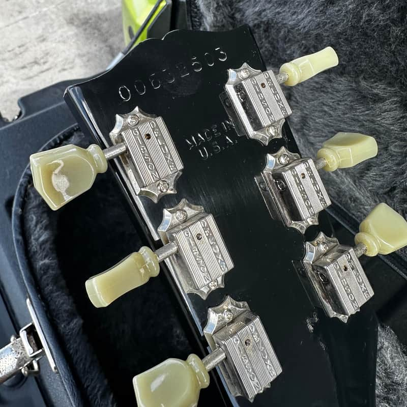
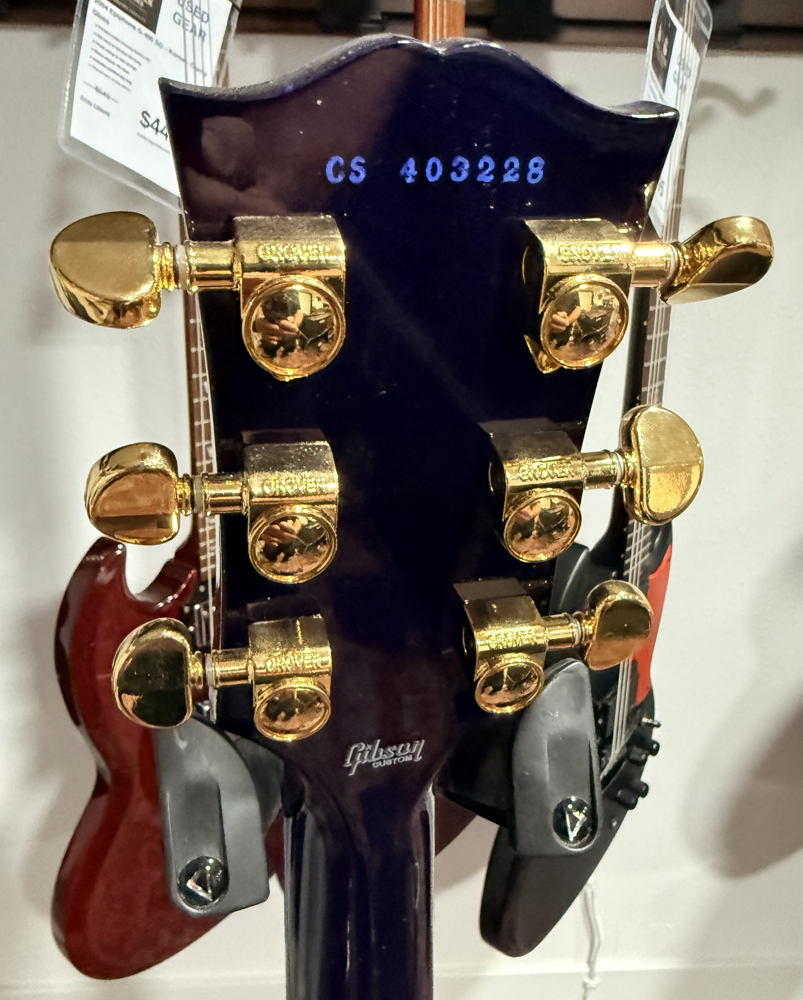

130 Years of American Lutherie
The Gibson Guitar Corporation is one of the great pillars of American musical craftsmanship. Founded in 1894 by Orville Gibson in Kalamazoo, Michigan, the company began as a maker of archtop mandolins and guitars at a time when most instruments were flat-topped European imports. Orville believed carved-top construction — borrowed from the violin family — produced superior tone and projection. He was right, and the world noticed.
By 1902, a group of Kalamazoo businessmen formed the Gibson Mandolin-Guitar Mfg. Co., Ltd., buying Orville's designs and name. The company flourished through the Jazz Age with its L-series archtops, then pivoted toward the electric future in the late 1930s, collaborating with the likes of Lloyd Loar and, most famously, Les Paul. The 1952 introduction of the Les Paul solid-body model — and the subsequent 1958–1960 "Burst" era — produced some of the most revered instruments in rock history.
Gibson moved its headquarters to Nashville, Tennessee in 1984, and today operates as Gibson Brands, Inc., encompassing Gibson USA, Gibson Acoustic, and the Gibson Custom Shop. Through every era, one constant thread connects each guitar to its moment in time: the serial number.
A Century of Serial Number Formats
Serial number systems at Gibson have never been simple. The company changed formats roughly a dozen times over its history, often overlapping numbering ranges between eras, which has created decades of confusion for buyers, sellers, and historians alike. Here is how the story unfolds.
The Ink-Stamp Years
Early Gibsons carried ink-stamped numbers inside the body — either on a paper label (acoustics) or directly on the interior wood (electrics). Numbers were sequential but non-contiguous, and many instruments left the factory without any number at all. For most pre-war instruments, factory order numbers (FONs) stamped on the neck block provide more reliable dating than serial numbers.
Five- and Six-Digit Paper Labels
Post-war production brought more consistency. Gibson used adhesive labels printed inside the body with 5- or 6-digit serial numbers, typically in the format A12345 or plain numerals. The famous "Burst" Les Pauls of 1958–1960 carry 6-digit numbers in the range of roughly 7–0000 to 9–9999 on labels inside the pickup cavity or back cover — a detail that now commands obsessive scrutiny from vintage collectors.
Headstock Stamps — The SG & Thinline Era
As production scaled up through the SG years, Gibson migrated serial numbers to the back of the headstock, stamped or impressed directly into the wood. Numbers were 5–6 digits and ran sequentially — but Gibson recycled number ranges, meaning a 100000-series guitar could be from 1963 or 1967. Cross-referencing the pot codes (stamped on potentiometers) became the standard workaround for accurate dating.
The Norlin Years Begin
After Norlin Musical Instruments acquired Gibson in 1969, production exploded — and so did serial number chaos. Gibson used an 8-digit format where the first digit indicated the factory and the remaining digits were a production sequence. Quality control controversies of the Norlin period have made these numbers heavily scrutinized by vintage buyers.
The Decal Transition
A brief transitional period saw 8-digit decals applied to the headstock, where 99 indicated 1975, 00 indicated 1976, and 06 indicated 1977. These are easy to misread and often peeled or faded, making positive identification tricky.
The Modern YDDDYRRR System
The format most players encounter today was introduced in 1977 and remains in use. It encodes the production year across two positions: YDDDYRRR — where the 1st and 5th digits together indicate the year, the 2nd through 4th digits are the day of the year (001–365), and the final three digits are the production ranking for that day at that factory. For example, a serial beginning with 02532 would decode as year 2002, day 253 of the year, sequence number 2.
Two Real Examples, Decoded
The two headstock photos shown here are perfect illustrations of Gibson's serial number evolution in action.


Quick Reference: Serial Formats at a Glance
| Era | Format Example | Location | Notes |
|---|---|---|---|
| 1902–1947 | ink stamp / FON | Body interior / neck block | Inconsistent; FONs more reliable |
| 1947–1960 | A12345 | Interior label | Letter prefix common; "Burst" era |
| 1961–1969 | 123456 | Headstock back | Ranges recycled — check pot codes |
| 1970–1975 | 12345678 | Headstock back | Norlin era; factory digit prefix |
| 1975–1977 | 99123456 | Headstock decal | Decal prone to damage |
| 1977–present | YDDDYRRR | Headstock back stamp | Current standard; year split across pos. 1 & 5 |
| Custom Shop | CS 403228 | Headstock back (ink) | CS prefix; separate sequence |
The Custom Shop prefix "CS" is worth noting: Custom Shop guitars are built to tighter tolerances with premium woods and hand-finishing, and Gibson deliberately separates them from the production-line numbering to reflect their distinct provenance. Instruments from the Historic division (now Authentic) carry an additional prefix — for instance "CS9" for 1959 reissues — which encodes the model year being reproduced.
Understanding these formats matters practically: they help verify authenticity, date refinish jobs (a 1970s-era serial on a "1959 original" is a red flag), and establish the production window for warranty claims and resale. For vintage instruments especially, serial numbers are the first chapter of a guitar's biography — and like any good story, the details are everything.